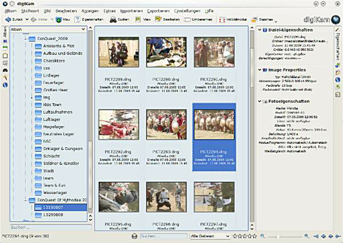
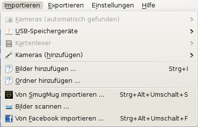

digiKam
Dieser Artikel wurde für die folgenden Ubuntu-Versionen getestet:
Ubuntu 17.10 Artful Aardvark
Ubuntu 16.04 Xenial Xerus
Ubuntu 14.04 Trusty Tahr
Zum Verständnis dieses Artikels sind folgende Seiten hilfreich:
digiKam  ist ein KDE-Programm zur Fotoverwaltung und -bearbeitung, mit dem sich fast alle Aufgaben rund um die Digitalfotografie erledigen lassen. Alternativen sind im Artikel Bilder verwalten zu finden.
ist ein KDE-Programm zur Fotoverwaltung und -bearbeitung, mit dem sich fast alle Aufgaben rund um die Digitalfotografie erledigen lassen. Alternativen sind im Artikel Bilder verwalten zu finden.
digiKam bietet viele - teils sehr professionelle - Funktionen:
Ordner-basierte Verwaltung in Alben und Unteralben
EXIF- IPTC und XMP-Unterstützung für programmübergreifende Metadaten:
Hinzufügen von Kategorien, Stichworten (auch als Tags bezeichnet), Bewertungen, Kommentaren und vielen anderen Informationen, etwa zum Aufnahmestandort oder CopyrightSchnelles Filtern, Sortieren und Suchen durch SQLite-Datenbank-Backend
Umfangreiche Im- und Exportmöglichkeiten
Bildbearbeitungsfunktionen mit Vorher-/Nachher-Ansicht
Stapelverarbeitung zum Bearbeiten, (Um-)Komprimieren und Umbenennen
Leuchttisch zum Vergleichen von ähnlichen Bildern
Erweiterbar mit Kipi-Plugins, die auch von anderen Anwendungen wie Krita genutzt werden
Farbverwaltung (Color Management)
Unterstützung von RAW-Bildern (Kompatibilitätsliste
)
Installation¶
Für digiKam müssen folgende Pakete installiert [1] werden:
digikam (das Grundpaket)
digikam-doc (gut verständliches Handbuch (leider nicht immer aktuell))
 mit apturl
mit apturl
Paketliste zum Kopieren:
sudo apt-get install digikam digikam-doc
sudo aptitude install digikam digikam-doc
Optional (für die allermeisten Nutzer nicht notwendig!) kann zusätzlich
gallery2 - eigene Online-Webgalerien (mittels Kipi-Plugin) verwalten
installiert werden. Nach der Installation ist digiKam in KDE unter "Anwendungen -> Grafik -> digiKam" zu finden.
Ohne KDE-Desktop¶
Um digiKam plus Komponenten, aber ohne die vielen KDE-Abhängigkeiten zu installieren, ein Terminal öffnen und folgenden Befehl eingeben:
sudo apt-get install --no-install-recommends digikam exiv2 kipi-plugins graphicsmagick-imagemagick-compat
Dadurch werden auch zahlreiche weitere Probleme unter anderen Desktop-Umgebungen verhindert. Um die deutschen Übersetzungen zu aktivieren, zusätzlich folgendes Paket installieren:
language-pack-kde-de
mit apturl
Paketliste zum Kopieren:
sudo apt-get install language-pack-kde-de
sudo aptitude install language-pack-kde-de
Der Start erfolgt dann bei Ubuntu-Varianten mit einem Anwendungsmenü über "Grafik -> digiKam".
Erster Start¶
Beim ersten Start wird ein Assistent angezeigt, der das erste Album anlegt und abfragt, wo die Datenbank hinterlegt werden soll. In den meisten Fällen ist es sinnvoll, für beides denselben Ordner anzugeben.
Grundfunktionen¶
Das Hauptfenster von digiKam ist in mehrere Bereiche unterteilt:

In der linken Seitenleiste wird eine Übersicht aller Alben und Unterordner angezeigt. Per Klick auf die Icons können andere Ansichten (u.a. Stichwörter, Suche und Kalender) gewählt werden.
In der Mitte sieht man die Vorschaubilder des aktuell ausgewählten Ordners. Per Linksklick
 auf ein Vorschaubild wird es vergrößert angezeigt, mit einem zweiten Klick kehrt man wieder in die Vorschau-Ansicht zurück.
auf ein Vorschaubild wird es vergrößert angezeigt, mit einem zweiten Klick kehrt man wieder in die Vorschau-Ansicht zurück.In der rechten Seitenleiste können Informationen zum Bild angezeigt und bearbeitet werden.
Die Statusleiste am unteren Rand zeigt den Dateinamen des ausgewählten Bildes oder die Anzahl der ausgewählten Bilder an. Gleichzeitig bietet sie Funktionen zum Filtern nach Texten, Dateiformaten und Bewertungen. Mit den Lupen-Symbolen oder dem Schieberegler kann die Größe der Vorschaubilder angepasst werden und mit den Pfeilen kann das erste, vorherige, nächste oder letzte Foto ausgewählt werden.
Bilder importieren¶

Von Kamera, Speicherkarte oder USB-Stick¶
digiKam nutzt gPhoto2 für den direkten Zugriff auf Kameras und unterstützt damit derzeit über 1100 verschiedene Kameras (Kompatibilitätsliste ). Daneben ist der Zugriff auf USB-Massenspeicher (USB-Sticks, Speicherkartenleser und manche Kameras) möglich - praktisch, wenn die eigene Kamera nicht erkannt wurde.
Hinweis:
Kameras müssen üblicherweise eingeschaltet sein, bevor auf sie zugegriffen werden kann.
Zum Importieren von Bildern muss das entsprechende Medium ausgewählt werden. Via gPhoto2 angesprochene Kameras erscheinen unter "Importieren -> Kameras (automatisch gefunden)". Unter "Importieren -> Speicherkartenleser" werden manche Speicherkartenleser angezeigt, andere (und manche Kameras) geben sich aber auch als USB-Sticks bzw. Massenspeicher aus und können unter "Importieren -> USB-Speichergeräte" gefunden werden. Mit "Importieren -> Kameras (hinzufügen) -> Kameras hinzufügen" können nicht automatisch erkannte Kameras manuell hinzugefügt werden (das betrifft hauptsächlich mittlerweile veraltete Kameras mit serieller Verbindung).
Nach der Auswahl des Mediums erscheint ein Fenster mit Vorschaubildern. Bilder, die noch nicht in digiKam importiert wurden, haben einen gelben Stern in der rechten oberen Ecke. Hiermit kann man alle Bilder markieren, die importiert werden sollen: Beim darüber fahren über ein Vorschaubild erscheint links oben ein kleines grünes Plus, mit dem das Bild zur Auswahl hinzugefügt werden kann. Das gleiche ist auch per
Strg + möglich. Alle Bilder können per
Strg +
A markiert werden.
Per Klick auf ein Vorschaubild kann das Bild vergrößert anzeigen werden. Das kann in manchen Situationen die Auswahl erleichtern. Es ist aber natürlich auch möglich, alle Bilder zu importieren und erst nachträglich auszusortieren.
Nach der Auswahl der gewünschten Bilder werden diese mit einem Klick auf "Herunterladen" importiert.
Von der Festplatte¶
Auch Bilder, die sich zwar auf der Festplatte, aber noch in keinem digiKam-Album befinden, können importiert werden: Mit "Importieren -> Bilder hinzufügen" können einzelne Bilder importiert werden, "Importieren -> Ordner hinzufügen" importiert dagegen alle Bilder im Ordner und allen Unterordnern.
Nach der Auswahl des Ordners bzw. der Bilder wird das Album ausgewählt (oder ggf. ein neues erstellt), in den die Bilder kopiert werden. Danach hat man also zwei Exemplare dieser Bilder auf der Festplatte: Einmal am ursprünglichen Speicherort und zusätzlich in digiKam. Abhilfe schafft u.U. die Verwendung des eigenen Bilderordners als Ordner für digiKam (s.o.).
Scannen¶
Mit "Importieren -> Bilder scannen" können Bilder gescannt und direkt in ein Album importiert werden. Dabei wird auf libksane zurückgegriffen, die Bedienung ist daher identisch zu Skanlite .
Automatischer Start unter Gnome beim Anschließen einer Kamera¶
Unter Gnome läßt sich beispielsweise F-Spot automatisch beim Anschließen der Kamera öffnen. Mit digiKam funktioniert das nicht so einfach, zumindest nicht, indem man nur unter Benutzerdefinierten Befehl benutzen "digikam" einträgt.
Aber mit einem einfachen Script geht es:
#!/bin/bash gvfs-mount -s gphoto2 digikam --detect-camera
Die Option --detect-camera öffnet gleich das Import-Fenster.
Dieses Script irgendwo ablegen, z.B. ~/Programme/, dann ausführbar machen und im Dialogfenster (oder im Nautilus unter "Bearbeiten -> Einstellungen -> Datenträger -> Fotos") unter "mit anderer Anwendung öffnen..." und dort "Benutzerdefinierten Befehl benutzen" eintragen.
Praktische Nutzung¶
Hier geht es um den Arbeitsablauf (Workflow), um mit Hilfe von DigiKam Fotos bearbeiten zu können.
Editor öffnen¶
Um Fotos zu bearbeiten, muss das Foto zuerst im Editor geöffnet werden. Nach Markieren des Vorschaubildes muss dazu links oben im Programmfenster auf "Bildbearbeitung" geklickt werden.
Foto ausrichten¶
Ist z.B. der Horizont schief, sollte er korrigiert werden. Im Menü auf "Transformieren -> Freie Rotation..." gehen. Zwei Möglichkeiten stehen nun zur Auswahl, um das Foto auszurichten:
Automatische Anpassung: Hier muss auf zwei Punkte geklickt werden, welche in einer Linie in der Waagerechten oder Senkrechten liegen müssen, um anschließend das Foto korrekt zu rotieren. Dazu im Foto den ersten Punkt auswählen und anklicken, dann auf "1 Klicken zum Bestimmen" gehen. Nun den 2. Punkt im Foto auswählen und anklicken und anschließend auf "2 Klicken zum Bestimmen" und mit Linksklick auf "Anpassen" abschließen. Durch Wiederholung des genannten Vorgangs können die Punkte anschließen korrigiert werden.
Manuelle Einstellung: Den oberen Regler so einstellen, das es ungefähr stimmt, mit dem unteren Regler die Feineinstellung vornehmen.
Nach einer solchen Drehung liegt das Foto sozusagen schief auf dem Bildschirm. Mit Hilfe von "Automatisches Zuschneiden -> Größter Bereich" wird so wenig wie möglich vom Foto weg geschnitten, damit es wieder gerade aussieht.
Ausschnitt festlegen¶
Die Wirkung eines Bildes wird oft deutlich besser, wenn Unwesentliches weggelassen oder Wesentliches an die richtige Stelle gerückt wird. Dazu wird ein Rahmen geöffnet: Mit der linken Maustaste auf das Foto klicken, geklickt halten und soweit ziehen, bis der Ausschnitt stimmt. Nun kann der Ausschnitt noch angepasst werden, indem entweder der Rand verzogen wird oder in die Mitte geklickt wird und das Fenster verschoben wird.
Aktiv wird der Ausschnitt über "Transformieren -> Auf Auswahl zuschneiden" oder schneller mit Strg + X
Belichtungs- und Farbkorrektur¶
Hier kommt es schnell zu Verwirrungen, da es mehrere Werkzeuge mit verschiedenen Vorzügen gibt. Diese sind alle im Menü unter "Farbe" zu finden. Es ist zum Teil Geschmackssache, wer welche Werkzeuge verwendet. Allen Werkzeugen ist gemeinsam, dass eine Gradationskurve angezeigt wird. Eine solche Kurve zeigt die Anzahl der Bildpunkte/Pixel in bestimmter Helligkeit. Ganz links ist schwarz, ganz Rechts ist reines weiß.
Fünf Automatiken sind hier verfügbar. Hier kann einfach mal ausprobiert werden, wie sich diese auswirken. Wem das nicht reicht oder wer selbst eingreifen möchte, kann die folgenden Möglichkeiten nutzen:
Helligkeit/Kontrast/Gamma: Wem eine "Gradation" zu kompliziert erscheint, sollte diese 3 Regler ausprobieren und schauen, was passiert.
Farbbalance: Wem eine "Gradation" zu kompliziert erscheint, sollte diese 3 Regler ausprobieren und schauen, was mit den Farben passiert.
Gradation: Dies ist das flexibelste Variante. Hier kann die Gradationskurve direkt bearbeitet werden, und zwar über das bewegen der blauen Linie. Ganz links werden schwarze Pixel definiert, ganz rechts die weißen, dazwischen sind alle Zwischentöne. Wird also z.B. im linken Bereich die blaue Linie nach oben verschoben, werden die Schatten aufgehellt, das Foto kann dann aber auch grau wirken. Um den Kontrast zu erhöhen, wird die blaue Linie links ein wenig abgesenkt, und im rechten, hellen Bereich etwas angehoben, so dass eine leichte S-Kurve entsteht. Siehe auch Die Gradationskurve - ein Fast-Alleskoenner

Schärfen¶
Dieser Arbeitsschritt sollte auf jeden Fall erst zum Abschluss der Fotobearbeitung eingesetzt werden. Schärfen hat durchaus negative Nebenwirkungen, weshalb man sich überlegen und anschauen sollte, ob und und wie stark man es treiben möchte.
Die Ansicht sollte auf Original-Auflösung in 100% gestellt werden, das geht leider nur, bevor das Werkzeug aufgerufen wird. Unten, in der Statusleiste rechts neben dem Schieberegler, kann die Auflösung eingestellt werden. Nach Öffnen des Werkzeugs Schärfen über das Menü "Verbessern -> Schärfen ..." sollte rechts oben die Methode auf "Unscharf Maskieren" gesetzt werden.
Nun können die 3 Regler verstellt werden. Die Vorschau wird erst aktiv, wenn unten "Ausprobieren" geklickt wird.
Geo-Lokalisierung¶
Da bisher nur wenige Digitalkameras GPS unterstützen, kann man seine Fotos nachträglich mit Koordinaten versehen. Auf einem kleinen Globus oder einer Karte wird dann dargestellt wo die Fotos geschossen wurden. Dazu markiert man ein oder mehrere Bilder und geht zu "Bild → Geo-Lokalisierung → Suche". Nun sucht man den entsprechenden Ort (Internetverbindung notwendig) und fügt die Koordinaten über Rechtsklick  → "Markierte Bilder zu diesen Koordinaten verschieben" ein. Alternativ dazu kann man die zu lokalisierenden Fotos mit der Maus auf die Karte ziehen.
→ "Markierte Bilder zu diesen Koordinaten verschieben" ein. Alternativ dazu kann man die zu lokalisierenden Fotos mit der Maus auf die Karte ziehen.
Videos lassen sich mit diesem Werkzeug nicht lokalisieren.
Problembehebung¶
Menü-Fehler in Unity umgehen¶
Leider funktioniert DigiKam mit der grafischen Oberfläche Unity nicht korrekt. Beim ersten Aufruf des Editors ist noch alles wie es soll, aber bei einem wiederholten Aufruf ist leider kein Menü mehr verfügbar.
Um das zu umgehen, kann die Menü-Integration aller KDE-Anwendungen in Unity deinstalliert werden. Dazu ein Terminal öffnen und eingeben:
sudo apt-get autoremove appmenu-qt
Alternativ kann eine KDE-Anwendung mit eigenem Menü gestartet werden. Dazu dient folgendes Skript:
#!/bin/bash export QT_X11_NO_NATIVE_MENUBAR=1; digikam
Falls das Menü noch immer nicht zu sehen ist, hilft das wiederholte Drücken von Strg + ⇧ + F
Links¶
Wiki


 u.a. - Online-Dokumentation
u.a. - Online-Dokumentation
Pflege einer digitalen Fotosammlung mit digiKam - viele nützliche Hinweise zur Fotoverwaltung
digiKam mit MySQL nutzen:
Bilder verwalten
 Übersichtsartikel
Übersichtsartikel
- Erstellt mit Inyoka
-
 2004 – 2017 ubuntuusers.de • Einige Rechte vorbehalten
2004 – 2017 ubuntuusers.de • Einige Rechte vorbehalten
Lizenz • Kontakt • Datenschutz • Impressum • Serverstatus -
Serverhousing gespendet von